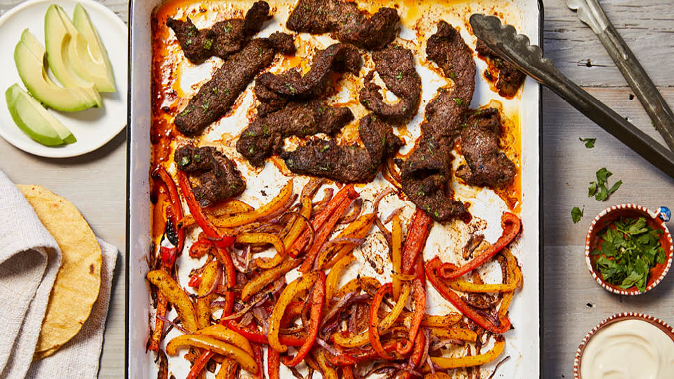

<!DOCTYPE html>
<!--[if lt IE 7]>      <html class="no-js lt-ie9 lt-ie8 lt-ie7"> <![endif]-->
<!--[if IE 7]>         <html class="no-js lt-ie9 lt-ie8"> <![endif]-->
<!--[if IE 8]>         <html class="no-js lt-ie9"> <![endif]-->
<!--[if gt IE 8]>      <html class="no-js"> <!--<![endif]-->
<html>
    <head>
        <meta charset="utf-8">
        <meta http-equiv="X-UA-Compatible" content="IE=edge">
        <title>Steak Fajitas</title>
        <meta name="description" content="">
        <meta name="viewport" content="width=device-width, initial-scale=1">
        <link rel="stylesheet" href="">
    </head>
    <body>
       
        
        <script src="" async defer></script>
    </body>
</html>
<h1>Steak Fajitas</h1>
    
    <h3>Description</h3>
        <p>This dish is a wonderful blend of peppers,onions and 
            flank steak. It is quick to throw together, and you
            can even pre-prepare it, then cook it later! Your 
            family is sure to love it.
        </p>
        <ul>Marinade Ingredients</ul>
            <li>2 tsp chili powder</li>
            <li>1 1/2 tsp cumin</li>
            <li>1 tsp smoke paprika</li>
            <li>1/2 tsp. garlic powder</li>
            <li>1 tsp. sea salt</li>
            <li>1/4 tsp. onion powder</li>
            <li>1/4 tsp. dried oregano</li>
            <li>2 tbs. extra-virgin olive oil</li>
            <li>2 tbs. lime juice</li>
            <li>2 tbs. minced fresh cilantro</li>
        <ul>Fajitas</ul>
            <li>1/2 lb. flank steak, sliced against the grain into 1/4-inch strips</li>
            <li>2 large bell peppers, sliced into ¼-inch strips</li>
            <li>1/2 small red onion, sliced into ¼-inch strips</li>
            <li>1 tbs. extra-virgin olive oil</li> 
        <h3>Directions</h3>
       <ol>
        <li>To make the marinade: In a small bowl, mix the seasonings together.
            In a medium bowl, whisk 2 tablespoons olive oil,
            lime juice, cilantro, and half of spice mixture. Add the sliced 
            steak, toss to coat, and marinate for 30 minutes
            at room temperature or up to two hours in the refrigerator.
        </li>
        <li>Preheat oven to 425 degrees F and line a half-sheet pan
            with aluminum foil, if desired. Place the pan on the 
            top rack of the oven to preheat.
        </li>
        <li>Place the peppers and onion in a medium bowl. Add
            1 tablespoon olive oil and remaining spice mixture,
            and mix until thoroughly coated. Carefully remove the hot pan
            from the oven. Add the peppers and onion to the pan and arrange in a single layer.
        </li>
        <li>Cook for five minutes. Remove the pan from the oven, push the
            vegetables to one side of the pan, and add the steak to the other side.
            Cook for an additional eight to 10 minutes, until the vegetables 
            are beginning to soften and the steak has browned on the outside. 
            Serve with warmed tortillas, fresh cilantro, avocado, lime wedges, sour cream,
            or any preferred toppings.
        </li>
    </ol>
</html>